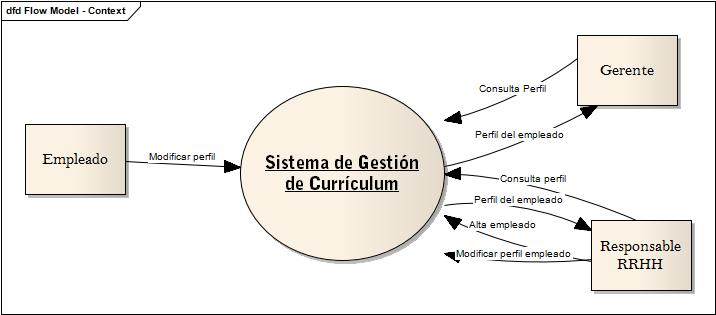

Sistema de Gestion de Curriculums - DFD
Enunciado del sistema:
El Sistema de Gestor de Currículum será el responsable de gestionar los Currículum de los Trabajadores de la Empresa. La aplicación será capaz de almacenar información referente a la formación del personal, y que sea susceptible de ser utilizada por la empresa en la labor de búsqueda de perfiles para sus Proyectos. Los propios Trabajadores serán los que mantengan su currículum, y el Gerente será capaz de consultarlos desde cualquier lugar donde se encuentre, por lo que sería muy recomendable que la arquitectura de la aplicación sea web.
Diagrama de contexto:
El diagrama de contexto representa la vista de más alto nivel del sistema permitiendo visualizar sus principales interfaces.

Diagrama de nivel 1:
En construcción...